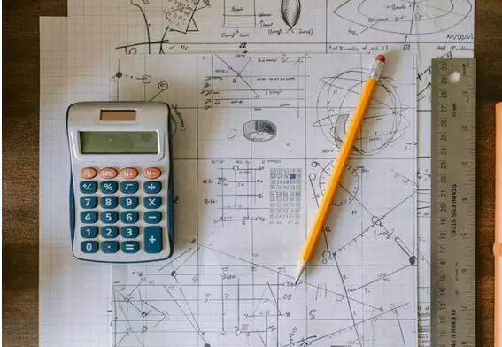
PrůvodceAnhydritová podlaha a její cena — kompletní cenový průvodce
Kolik stojí anhydritová podlaha za metr čtvereční? Cenové tabulky dle tloušťky, plochy i regionu. Položkový rozklad, skryté náklady a férové srovnání s betonem i cementovým potěrem.
Číst článek →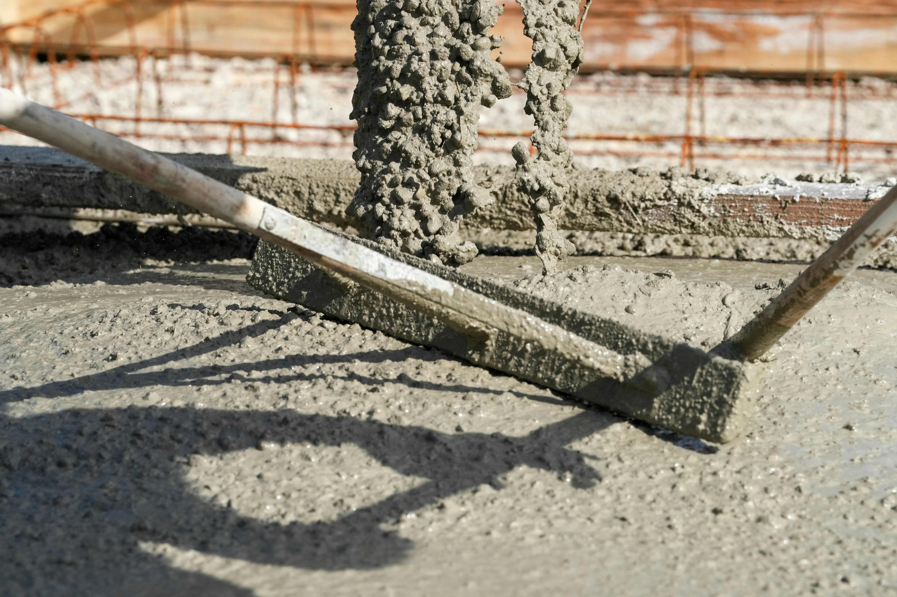
Litá podlahaPříprava podkladu pro litou podlahu — kompletní návod od diagnostiky po separaci
90 % reklamací u litých podlah pramení z podcenění přípravy podkladu. Projdeme všechny kroky — diagnostiku, broušení, penetraci, separaci, dilataci i kontrolu vlhkosti — pro anhydrit i cementové lité potěry.
Podlaha do garáže — kompletní průvodce výběrem, skladbou a realizací
Jaká podlaha do garáže vydrží desítky let bez prasklin, olejů a soli z kol? Kompletní průvodce od podkladu po finální úpravu — se všemi parametry, které potřebujete vědět před poptávkou.
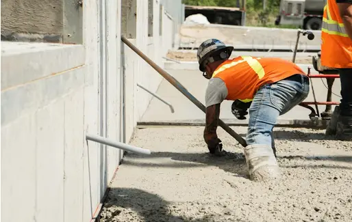
Leštěná podlahaCena podlahy do garáže a sklepa 2026 — komplet přehled včetně příplatků
Kolik reálně zaplatíte za podlahu do garáže nebo sklepa v roce 2026? Detailní cenové tabulky pro všechny typy, modelové kalkulace, příplatky a tipy, jak ušetřit až 20 % bez ztráty kvality.
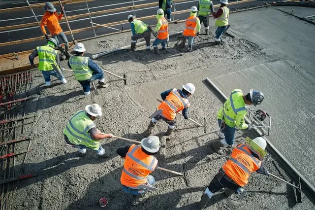
Litá podlahaAnhydrit nebo cement? Průvodce výběrem potěru
Stojíte před rozhodnutím, jaký potěr do novostavby nebo rekonstrukce? Tady je praktický průvodce, který vám pomůže vybrat správně — podle typu stavby, topení a rozpočtu.
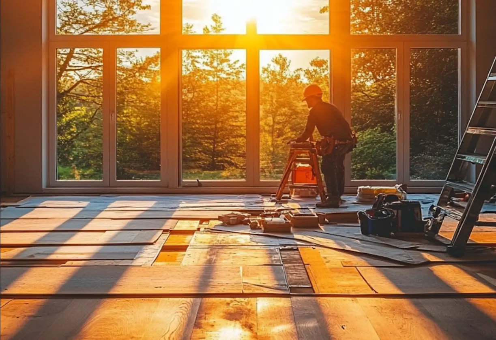
MateriálSkladba podlahy v rodinném domě — vrstvy od základu po nášlap
Každá vrstva podlahy má svůj účel — od hydroizolace po finální nášlap. Ukážeme vám správné skladby na zemině, na stropu i s podlahovým topením. Včetně tlouštěk, materiálů a typických chyb.
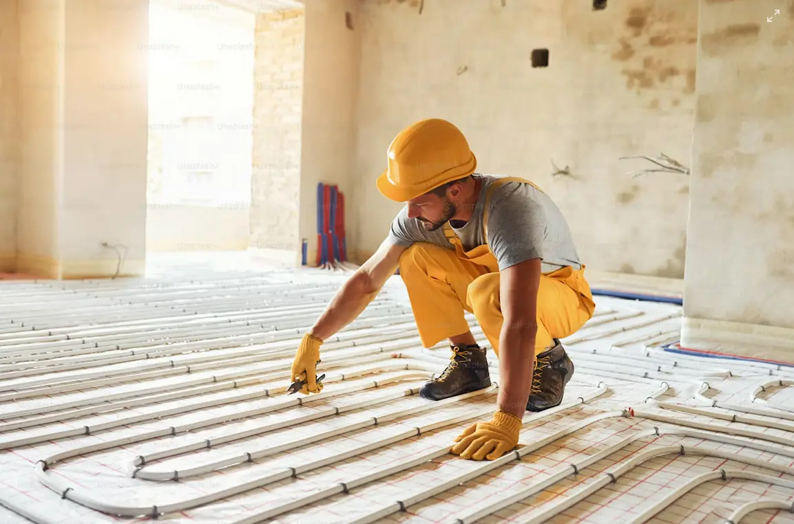
MateriálPodlahové topení cena — kolik stojí instalace, potěr i provoz
Podlahové topení je investice, která se vrátí. Ale kolik vlastně stojí? Porovnáváme ceny teplovodního a elektrického systému, náklady na potěr a provozní úspory oproti radiátorům.
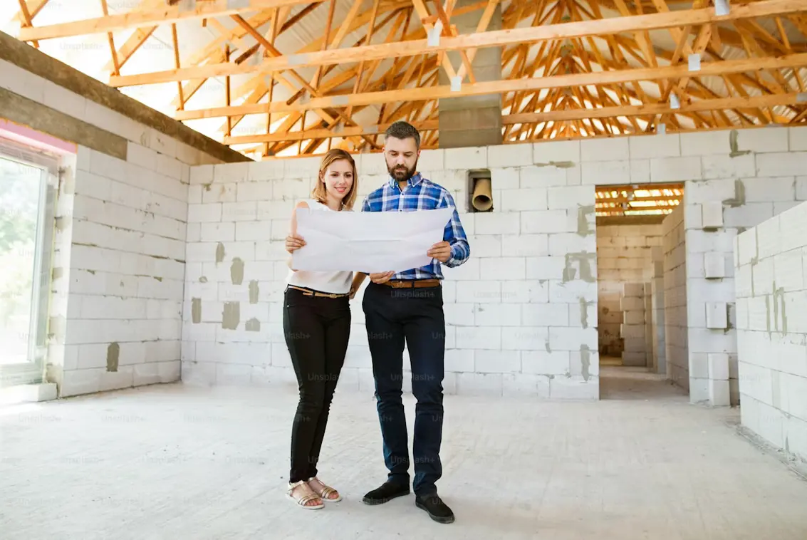
PodlahaPodlaha do rodinného domu — jakou zvolit a kolik to bude stát
Stavíte nebo rekonstruujete rodinný dům a řešíte podlahu? Srovnáváme anhydrit, beton, cementový potěr i leštěný beton — ceny, vlastnosti, skladby a na co si dát pozor.
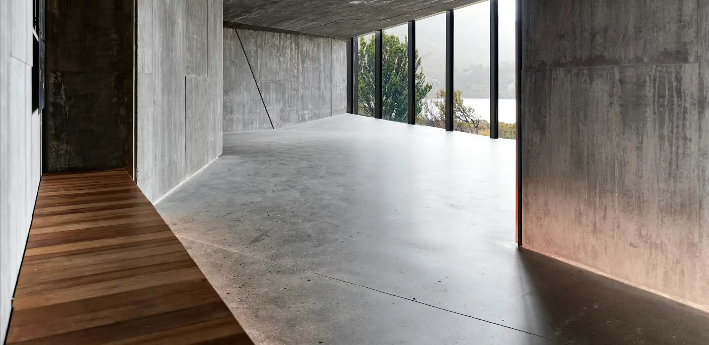
leskLeštěný beton cena za m² — od základního leštění po designové teraco
Leštěný beton v interiéru nemusí stát jmění. Základní leštění začíná na 500 Kč/m², designové varianty dosahují 2 500 Kč/m². Porovnáváme všechny varianty a ukazujeme, kde se dá ušetřit.
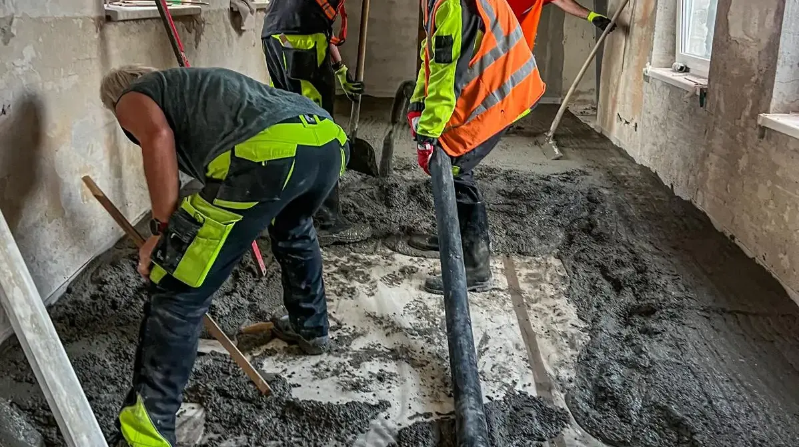
Betonové podlahyBetonové podlahy Olomouc — realizace, ceník a reference z Olomouckého kraje
Hledáte firmu na betonové nebo anhydritové podlahy v Olomouci? MO Betony realizuje lité, leštěné i průmyslové podlahy po celém Olomouckém a Jihomoravském kraji. 15+ let zkušeností, 500+ dokončených projektů.
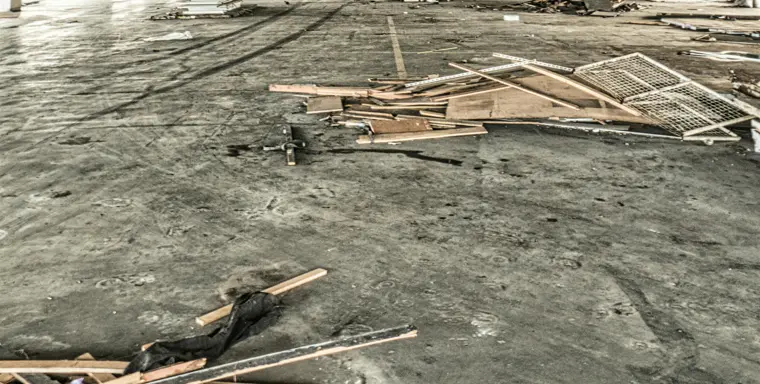
MateriálCena průmyslové podlahy 2026: Kolik stojí m² v hale, skladu nebo garáži?
Hlazený beton, vsypová podlaha, epoxid nebo polyuretan — každý typ má jiný ceník. Porovnáváme reálné ceny za m² a ukazujeme, kde se dá ušetřit bez kompromisů na kvalitě.
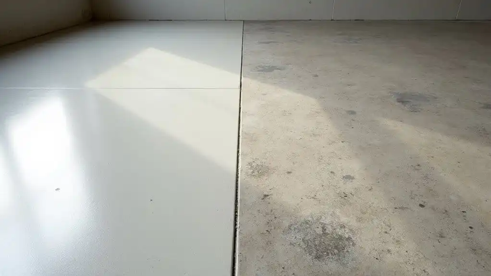
VSAnhydrit vs. beton: Který potěr je lepší?
Detailní srovnání dvou nejpoužívanějších materiálů. Kdy zvolit anhydrit a kdy klasický beton?
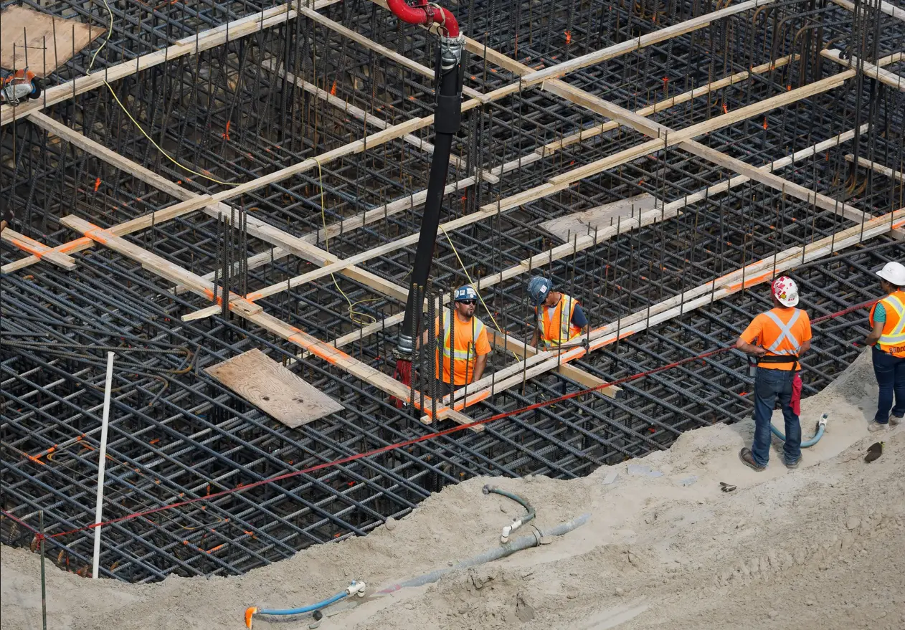
5×5 věcí, které musíte vědět před realizací podlahy
Od přípravy podkladu po výběr finální úpravy. Vyvarujte se nejčastějších chyb při stavbě.
 Litá podlaha
Litá podlaha
Jak vybrat správnou podlahu pro váš projekt
Rodinný dům, průmyslová hala nebo moderní loft — každý prostor vyžaduje jiný typ podlahy. Připravili jsme kompletního průvodce, který vám pomůže s rozhodnutím.
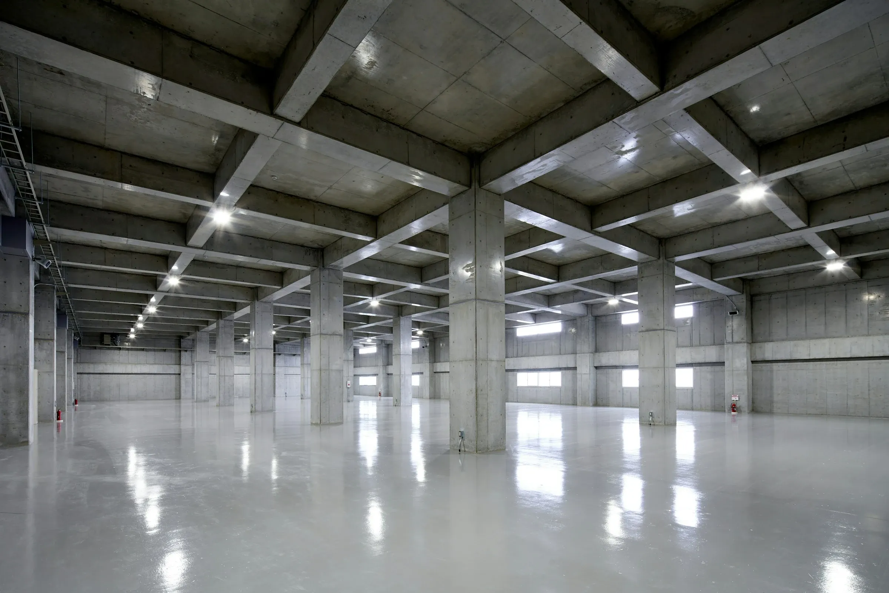
Litá podlahaBetonová podlaha cena — Srovnání: Kolik stojí m² v garáži, hale i rodinném domě.
Hlazený beton, leštěný beton, drátkobeton, epoxidová stěrka — každý typ betonové podlahy má jiný ceník. Srovnáváme ceny všech variant na jednom místě a ukazujeme, kde ušetříte.
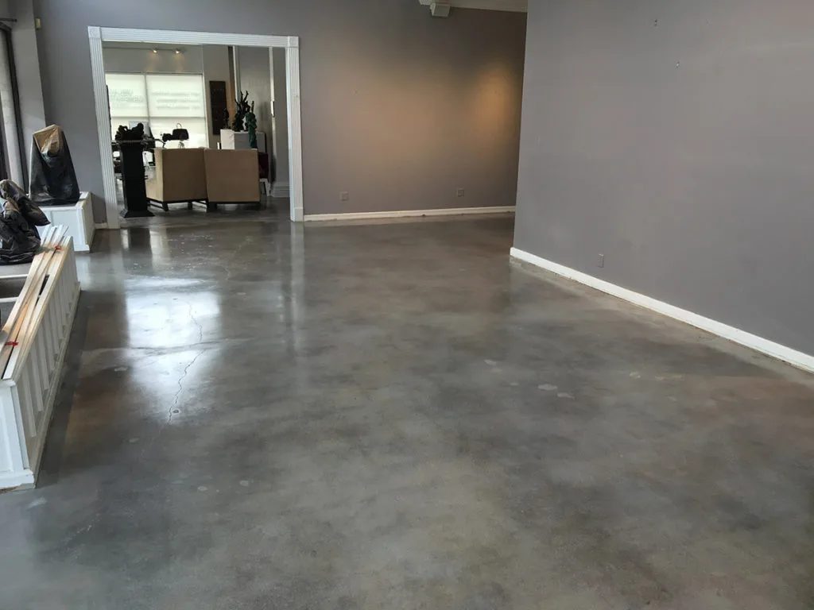
LeskLeštěný beton: Luxus, který vydrží generace
Proč si designéři a architekti zamilovali leštěný beton. Jak probíhá broušení a co od něj čekat.
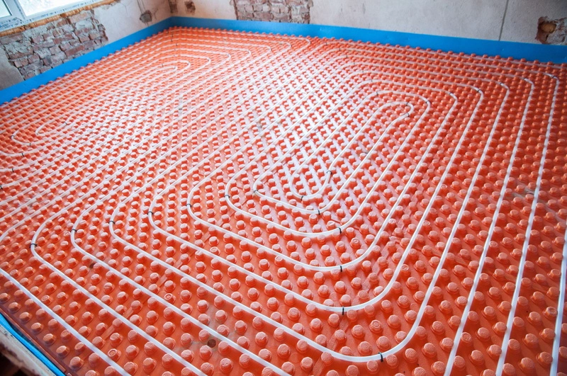
TeploPodlahové topení + anhydrit: Ideální kombinace
Proč je anhydritová podlaha nejlepší volbou pro podlahové vytápění a jak zajistit správnou realizaci.
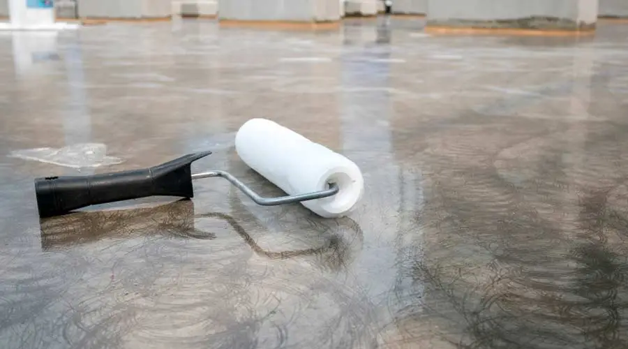
PéčeJak se starat o betonovou podlahu
Jednoduchý návod na údržbu, čištění a ochranu betonových a leštěných podlah. Prodlužte životnost.
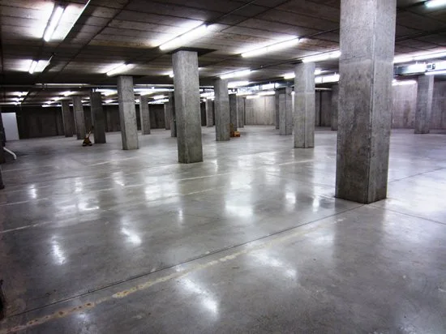
HalaPrůmyslové podlahy: Kompletní průvodce pro haly a sklady
Jakou podlahu zvolit do výrobní haly, skladu nebo autoservisu? Přehled typů a technologií.
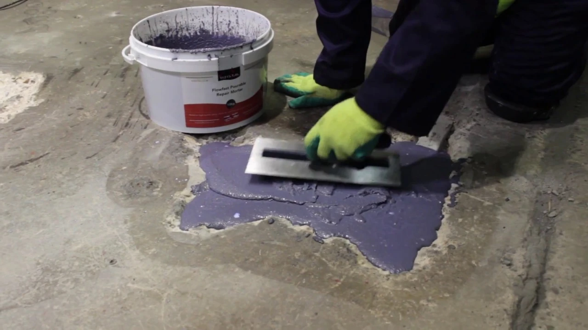
OpravaRekonstrukce podlahy: Kdy opravit a kdy vyměnit
Praskliny, nerovnosti, odlupující se povrch? Zjistěte, kdy stačí oprava a kdy nutná výměna.
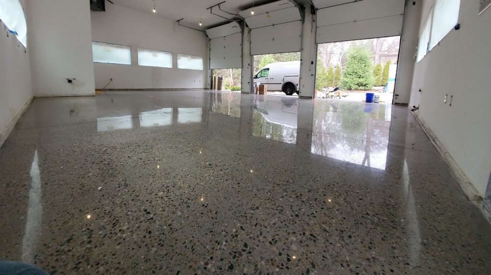
GarážPodlaha do garáže: Jakou zvolit a proč
Beton, leštěný beton nebo epoxid? Porovnání materiálů a cen pro garáže.
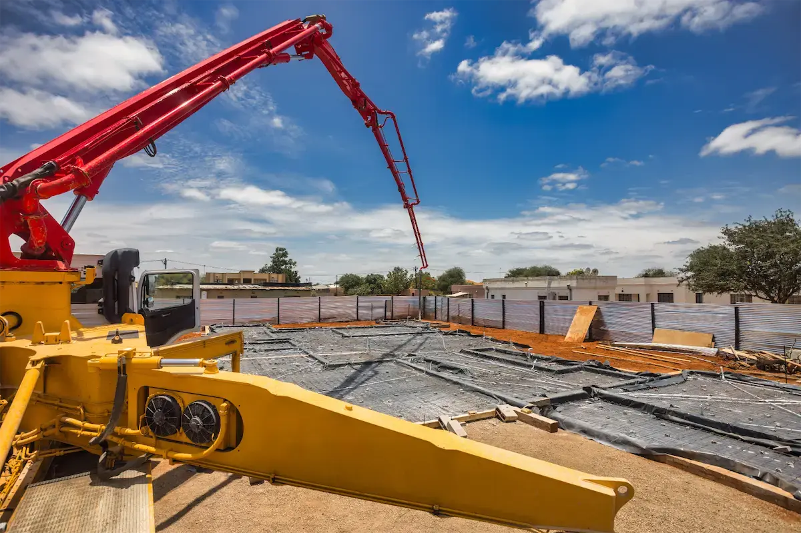
PumpČerpání betonu: Jak to funguje a kdy se vyplatí
Jak funguje mobilní čerpadlo, kam až dočerpá a proč je čerpání klíčové pro kvalitní podlahu.
Cena anhydritové podlahy 2026: Kolik zaplatíte za m²?
Reálný přehled cen anhydritových podlah. Co ovlivňuje konečnou cenu a jak správně porovnávat nabídky.
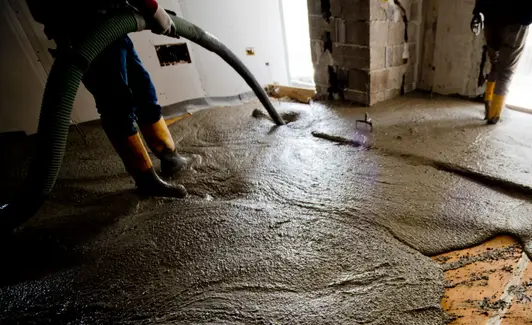
PostupJak probíhá realizace lité podlahy: Krok za krokem
Kompletní průvodce procesem od první obhlídky po finální broušení. Co vás čeká a jak se připravit.
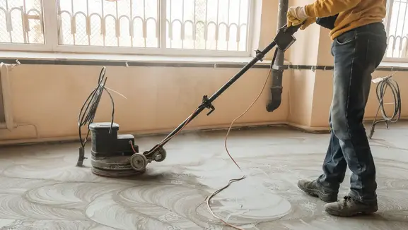
ČasVysychání anhydritu: Jak dlouho trvá a jak ho urychlit
Kolik týdnů čekat, jak bezpečně urychlit proces topením a kdy je potěr připravený na finální krytinu.
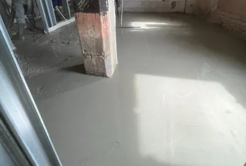
NovostavbaAnhydrit v novostavbě: Průvodce pro stavebníky
Kdy přesně se lije anhydrit, co musí být hotové předem a jak se vyhnout chybám, které zdržují celou stavbu o týdny.
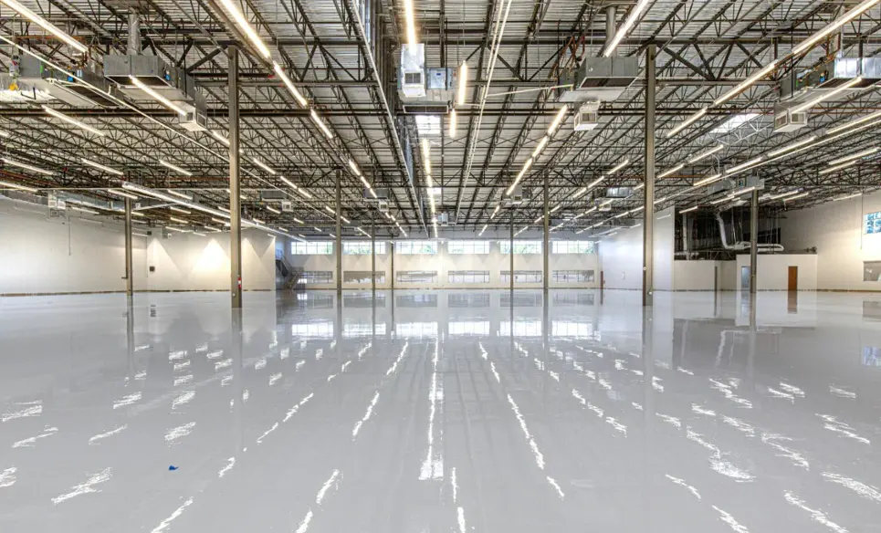
StěrkaSamonivelační stěrka: Co je to a kdy ji použít
Stěrka nebo litý potěr? Vysvětlíme rozdíly, typy stěrek, postup nanášení a kdy se stěrka skutečně vyplatí.
Podlaha při rekonstrukci bytu: Průvodce bez zbytečných chyb
Co jde bez bourání, kdy se vyplatí anhydrit v rekonstrukci a jak vyřešit výškovou koordinaci v bytě nebo paneláku.
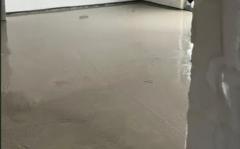
OlomoucCementový potěr Olomouc: Ceny a realizace 2026
Aktuální ceny cementového potěru v Olomouci, srovnání s anhydritem a přehled oblastí, kde realizujeme.
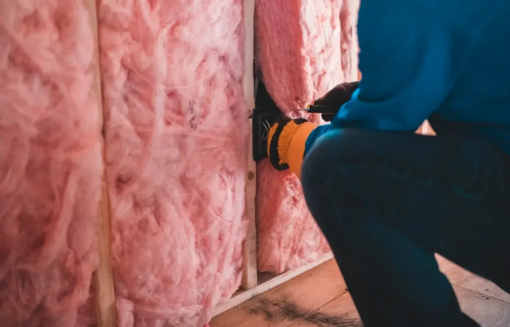
IzolaceTepelná izolace pod podlahou: EPS, XPS nebo PIR?
Srovnání izolačních materiálů pod potěr — tloušťky, ceny, kdy co použít a jak izolace ovlivňuje podlahové topení.
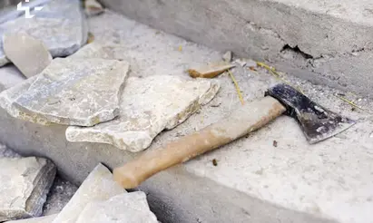
PřípravaPříprava podkladu pro anhydrit: Kompletní návod
Správná příprava podkladu je základ úspěšné anhydritové podlahy. Špatný podklad = praskliny a vlhkost. Tady je návod, jak to udělat správně.
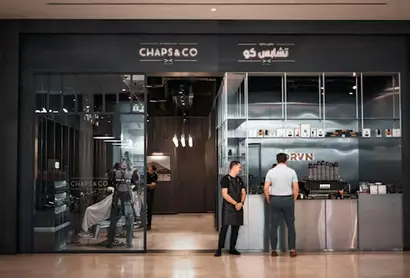
KavárnaLeštěný beton v restauracích a kavárnách
Kavárny, restaurace a obchody — leštěný beton se prosazuje jako moderní, odolná a cenově efektivní alternativa k dlažbě. Zjistěte proč a za kolik.
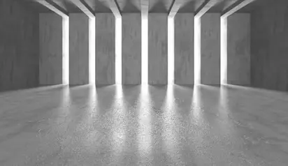
HalaPodlaha v novostavbě: Postup, vrstvy a ceny
Stavíte dům a řešíte podlahy? Tady je kompletní průvodce — od nosné desky po finální povrch. Správný postup, materiály, časový harmonogram a na co si dát pozor.